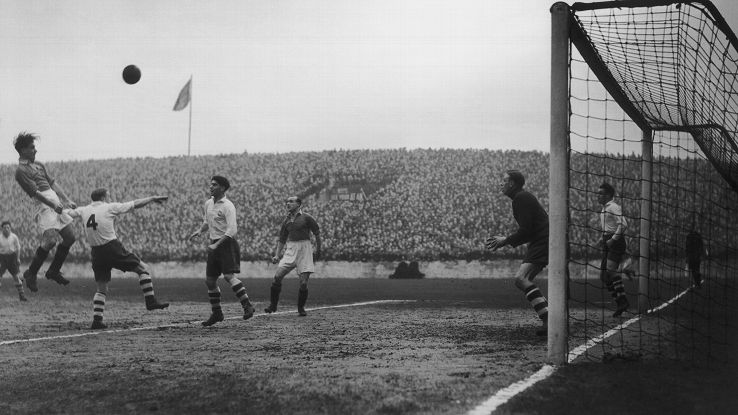

History of the Manchester United Club Since The Beginning
Founded in 1878 as newton heath L&YR football club, our club has operated for over 138 years. The team first entered the English first division, then the highest league in English football, for the start of the 1892-93 season. Our club name changed to Manchester united football club in 1902, and we won the first of our 20 English league titles in 1908. In 1910, we moved to old Trafford, our current stadium.
Late 1940s
In the late 1940s, we returned to on-field success, winning the FA Cup in 1948 and finishing within the top four league positions during each of the first five seasons immediately following the Second World War. During the 1950s, we continued our on-field success under the leadership of manager Sir Matt Busby, who built a popular and famous team based on youth players known as the "Busby Babes."


1958
In February 1958, an airplane crash resulted in the death of eight of our first team players. Global support and tributes followed this disaster as Busby galvanized the team around such popular players as George Best, Bobby Charlton and Denis Law. Rebuilding of the club culminated with a victory in the 1968 European Cup final, becoming the first English club to win this title.

1986
In 1986, our club appointed Sir Alex Ferguson as manager. In 1990, we won the FA Cup and began a period of success that has continued until the present day. Since 1992, we have won the Premier League 13 times. In total, we have won a record 20 English League titles, a record 12 FA Cups, 4 League Cups, 3 European Champions Cups and 1 FIFA Club World Cup, making us one of the most successful clubs in England.
2012/13
At the end of the 2012/13 season, Sir Alex Ferguson retired as team manager. Sir Alex remains a key member of the club as he is a director of Manchester United FC. David Moyes was our manager during the 2013/14 season and departed the club in April 2014. Following this departure, Ryan Giggs assumed responsibility for the first team as interim manager.
2014
On 19 May 2014, we announced Louis van Gaal as the new team manager of Manchester United under a three-year contract. Louis van Gaal has managed at the top level of European football for over 20 years, and, in that time, he has won domestic titles and domestic cups in three countries, as well as the UEFA Champions League, the UEFA Cup, an Intercontinental Cup, two UEFA Super Cups and domestic Super Cups in Holland and Germany. Louis van Gaal took his new post in July 2014 after the FIFA World Cup, where he managed the Dutch national team into third place position.